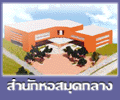

| มิถุนายน ๒๕๒๐ | สถาบันเทคโนโลยีพระจอมเกล้า วิทยาเขตเจ้าคุณทหารลาดกระบัง ได้เริ่ม บรรจุข้าราชการเพื่อดำเนินงานห้องสมุด จำนวน ๒ อัตรา โดยฝากไว้ที่ ห้องสมุดคณะวิศวกรรมศาสตร์ | |
| มีนาคม ๒๕๒๓ | ได้เริ่มดำเนินการโครงการสำนักหอสมุดกลาง โดยได้รับบริจาคหนังสือของ ศาสตราจารย์พงศ์ศักดิ์ วรสุนทโรสถ จำนวนหนึ่ง ทั้งนี้เปิดให้บริการรวม กับห้องสมุดคณะครุศาสตร์อุตสาหกรรมและวิทยาศาสตร์ ณ อาคารชั่วคราว คณะครุศาสตร์ฯ | |
| พฤษภาคม ๒๕๒๓ | ได้รับอัตราข้าราชการเพิ่มอีก ๓ อัตรา เพื่อร่วมดำเนินงานโครงการสำนัก หอสมุดกลางของวิทยาเขตฯ | |
| ตุลาคม ๒๕๒๕ | ได้แยกตัวโครงการสำนักหอสมุดกลาง ออกจากห้องสมุดคณะครุศาสตร์ อุตสาหกรรมและวิทยาศาสตร์ โดยเปิดให้บริการแก่นักศึกษา คณาจารย์ และข้าราชการของทั้งสถาบันฯ ณ ชั้น ๒ อาคารโรงอาหารวิทยาเขตฯ (อาคารโรงอาหารคณะวิทยาศาสตร์ ในปัจจุบัน) | |
| สิงหาคม ๒๕๒๙ | ได้รับอนุมัติจากทบวงมหาวิทยาลัยให้มีฐานะเป็นกองห้องสมุดในสำนักงาน อธิการบดี สถาบันเทคโนโลยพระจอมเกล้าเจ้าคุณทหารลาดกระบัง โดยมี ว่าที่ ร.ต.อวบ เหมะรัชตะ เป็นผู้รักษาการในตำแหน่งหัวหน้ากองห้องสมุด มีการแบ่งหน่วยงานภายในเป็น ๕ งาน คือ งานบริหารและธุรการทั่วไป งานบริการ งานพัฒนาทรัพยากรห้องสมุด งานวิเคราะห์ทรัพยากรห้องสมุด และงานโสตทัศนศึกษา | |
| ตุลาคม ๒๕๒๙ | ได้ย้ายที่ทำการจากชั้น ๒ อาคารโรงอาหารคณะวิทยาศาสตร์ มาอยู่ ณ ห้องรักษาเอกสาร อาคารศูนย์เรียนรวมสมเด็จพระเทพฯ เปิดให้บริการ แก่นักศึกษา คณาจารย์ ข้าราชการทั้งสถาบันฯ ตลอดจนให้บริการแก่ บุคคลภายนอกด้วย | |
| ตุลาคม ๒๕๓๐ | ว่าที่ ร.ต.อวบ เหมะรัชตะ เกษียณอายุราชการ สถาบันฯ จึงแต่งตั้งให้ นางสาวสุรีย์ บุหงามงคล ตำแหน่งบรรณารักษ์ เป็นหัวหน้ากองห้องสมุด สืบแทน | |
| กรกฏาคม ๒๕๓๑ | คณะรัฐมนตรีเห็นชอบให้กำหนดฐานะของกองห้องสมุดเป็น "สำนักหอสมุดกลาง" | |
| พฤศจิกายน ๒๕๓๑ | สถาบันฯ แต่งตั้งคณะกรรมการดำเนินการขอแบ่งส่วนราชการในสำนัก หอสมุดกลาง โดยมี ผศ.ดร.ศุภชัย รตโนภาส รองอธิการบดีฝ่ายวิชาการ เป็นประธานกรรมกา | |
| ๒๘ พฤษภาคม ๒๕๓๔ | ได้ยกฐานะจาก "กองห้องสมุด" เป็น "สำนักหอสมุดกลาง" ตามประกาศ ในราชกิจจานุเบกษา โดยมีผศ.ดร.ศุภชัย รตโนภาส รองอธิการบดีฝ่าย วิชาการ รักษาการในตำแหน่งผู้อำนวยการ | |
| ๑๑ มิถุนายน ๒๕๓๔ | ได้มีประกาศแบ่งส่วนราชการภายในสำนักหอสมุดกลางออกเป็น ๖ ฝ่าย คือ สำนักงานผู้อำนวยการ ฝ่ายบริการ ฝ่ายประสานงานห้องสมุดคณะ ฝ่ายพัฒนาทรัพยากรห้องสมุด ฝ่ายวิเคราะห์ทรัพยากรห้องสมุด และ ฝ่ายโสตทัศนศึกษา | |
| ๑ กรกฏาคม ๒๕๓๕ | สภาสถาบันฯ ได้แต่งตั้ง ผศ.ดร.ศุภชัย รตโนภาส เป็นผู้อำนวยการสำนัก หอสมุดกลาง นับเป็นผู้อำนวยการคนแรกของสำนักหอสมุดกลาง | |
| ๘ ตุลาคม ๒๕๓๕ | สภาสถาบันฯ ได้แต่งตั้งให้ ผศ.ดร.ศุภชัย รตโนภาส ดำรงตำแหน่งรอง อธิการบดี ฝ่ายวิชาการ ดังนั้น ผศ.ดร.ศุภชัย รตโนภาส จึงรักษาการใน ตำแหน่งผู้อำนวยการสำนักหอสมุดกลาง พร้อมกันไปด้วย | |
| ๙ กรกฏาคม ๒๕๓๖ | สภาสถาบันฯ ได้แต่ง ดร.เอื้อน ปิ่นเงิน เป็นผู้อำนวยการสำนักหอสมุดกลาง ถึงปัจจุบัน | |
| 31 สิ่งหาคม 2537 | พระบาทสมเด็จพระเจ้าอยู่หัวฯ ทรงพระกรุณาโปรดเกล้าให้สมเด็จพระเทพรัตนราชสุดาฯ สยามบรมราชกุมารี เสด็จพระราชดำเนินแทนพระองค์มาทรงวางศิลาฤกษ์ อาคารสำนักหอสมุดกลาง | |
| 12 กุมภาพันธ์ 253 | พระบาทสมเด็จพระเจ้าอยู่หัวฯ ทรงพระกรุณาโปรดเกล้าฯ ให้ใช้ชื่ออาคารสำนักหอสมุดกลาง "อาคารเฉลิมพระเกียรติ" พร้อมทั้งให้ประดิษฐานตราสัญลักษณ์งานฉลองสิริราชสมบัติเป็นปีที่ 50 ที่อาคารนี้ด้วย | |
| 4 กรกฎาคม 2539 | พระบาทสมเด็จพระเจ้าอยู่หัวฯ ทรงพระกรุณาโปรดเกล้าฯ ให้สมเด็จพระเทพรัตนราชสุดาฯ สยามบรม ราชกุมารีเสด็จพระราชดำ เนินแทนพระองค์มาทรงเปิดอาคารเฉลิมพระเกียรติ นับเป็นพระมหากรุณาธิคุณแก่ข้าราชการ และเจ้าหน้าที่ของสำนักหอสมุดกลางอย่างหาที่สุดมิได้ | |
| 6 มกราคม 2540 | เปิดให้บริการอย่างเป็นทางการ ณ อาคารเฉลิมพระเกียรติ |